Chapter 7 Factors
In R we can store categorical information as either strings or as factors. To a casual user, it often doesn’t matter how the information is stored because the modeling and graphing programs happily convert strings into factors whenever necessary. However a deeper understanding of how factors are stored and manipulated allows a user much finer control in the modeling and graphing.
We will be interested in the following broad classes of manipulations:
Edit Factor Labels
| Goal | forcats function |
|---|---|
| Manually change the label(s) | fct_recode(f, new_label = "old_label") |
| Systematically change all labels | fct_relabel(f, function) |
Reorder Levels
| Goal | forcats function |
|---|---|
| Set order manually | fct_relevel(f, 'b', 'a', 'c') |
| Set order based on another vector | fct_reorder(f, x) |
| Set order based on which category is most frequent | fct_infreq(f) |
| Set order based on when they first appear | fct_inorder(f) |
| Reverse factor order | fct_rev(f) |
| Rotate order left or right | fct_shift(f, steps) |
Add or Subtract Levels
| Goal | forcats function |
|---|---|
| Manually select categories to collapse into one | fct_collapse(f, other = c('a','b')) |
| Add a new factor level | fct_expand(f, 'new level') |
7.1 Creation and Structure
R stores factors as a combination of a vector of category labels and vector of integers representing which category a data value belongs to. For example, lets create a vector of data relating to what soft drinks my siblings prefer.
# A vector of character strings.
drinks <- c('DietCoke', 'Coke', 'Coke', 'Sprite', 'Pepsi')
str(drinks)## chr [1:5] "DietCoke" "Coke" "Coke" "Sprite" "Pepsi"# convert the vector of character strings into a factor vector
drinks <- factor(drinks)
# Category and Label mapping table
data.frame( Category=1:4, labels=levels(drinks))## Category labels
## 1 1 Coke
## 2 2 DietCoke
## 3 3 Pepsi
## 4 4 Sprite## [1] 2 1 1 4 3Notice that the factor has levels “Coke”, “DietCoke”, “Pepsi”, and “Sprite” and that the order of these levels is very important because each observation is saved as an integer which denotes which category the observation belongs to. Because it takes less memory to store a single integer instead of potentially very long character string, factors are much more space efficient than storing the same data as strings.
Whenever we do anything that sorts on this factor, the order of the labels in this mapping table determine the sort orders. In order to modify factor labels and levels, we basically need to modify this mapping table. We don’t do this directly, but rather using functions in the forcats package.
7.2 Change Labels
To demonstrate the forcats functions, we will consider two datasets. The first consists of a dataset of a small US highschool with observations for each student and we record their year and gender.
Students <-
expand.grid(Year='freshman', Gender=1, rep=1:23) %>%
add_row(Year='freshman', Gender=0, rep=1:25) %>%
add_row(Year='junior', Gender=1, rep=1:30) %>%
add_row(Year='junior', Gender=0, rep=1:32) %>%
add_row(Year='senior', Gender=1, rep=1:18) %>%
add_row(Year='senior', Gender=0, rep=1:19) %>%
add_row(Year='sophomore', Gender=1, rep=1:10) %>%
add_row(Year='sophomore', Gender=0, rep=1:12)
# Variables that are character strings are coerced to factors.
# Variables that are numeric are not, and should be explicitly turned to factors.
Students <- Students %>%
mutate( Gender = factor(Gender) )
Students %>%
ggplot( aes(x=Year, fill=Gender)) +
geom_bar() + coord_flip()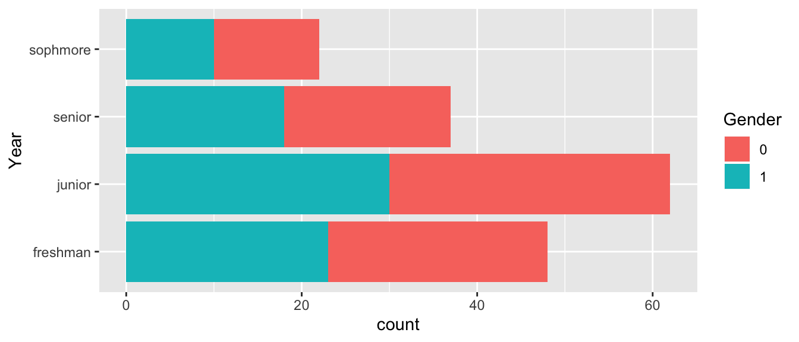
The first thing we ought to consider is how to change the factor labels for Gender. To do this we’ll use the fct_recode() function.
# Change Gender from 0/1 to Female/Male
Students <- Students %>%
mutate( Gender = fct_recode(Gender, Male='1'),
Gender = fct_recode(Gender, Female='0') )
# Change "Freshman" to the gender neutral "First Year"
Students <- Students %>%
mutate( Year = fct_recode(Year, `first year` = 'freshman'))
Students %>%
ggplot( aes(x=Year, fill=Gender)) + geom_bar() + coord_flip()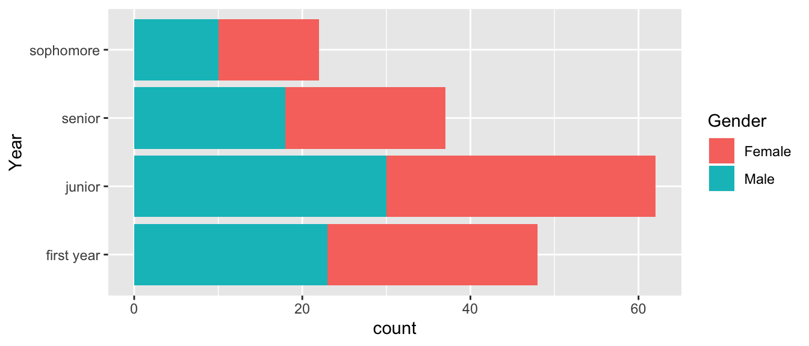
We might want to apply some function to all the labels. Perhaps we want to remove white space or perhaps we want to capitalize all the labels. To apply a function to each of the labels, we use the fct_relabel() function.
Students %>%
mutate( Year = fct_relabel(Year, stringr::str_to_upper) ) %>%
ggplot( aes(x=Year, fill=Gender)) + geom_bar() + coord_flip()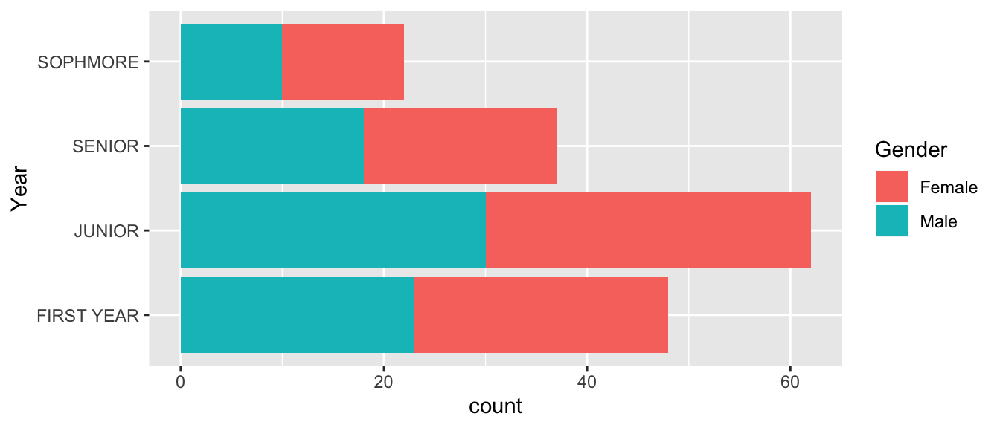
7.3 Reorder Levels
Once the factor labels are set, the next most common thing to do is to rearrange the factors. In our Students example, the order is messed up because it chose to order them in the same order that they appear in the data set. That is not appropriate and in this case, it makes sense to change the order to the chronological order First Year, Sophmore, Junior, Senior.
To change the ordering manually, we use the fct::relevel() command. This function takes as many levels as you give it and leaves the unaccounted for levels in the same order as they were.
# Seniors first, leave the rest in the order they already were
Students %>%
mutate( Year = fct_relevel(Year, 'senior') ) %>%
ggplot( aes(x=Year, fill=Gender)) + geom_bar() + coord_flip()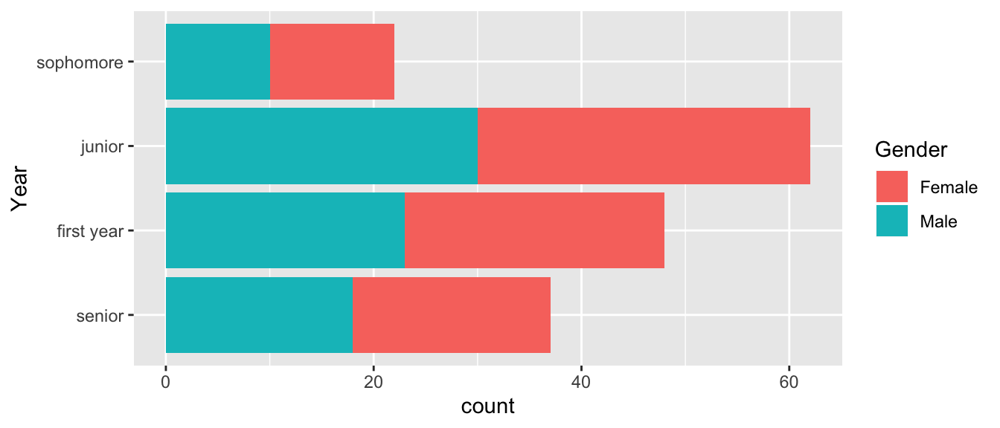
# reset all the levels orders
Students %>%
mutate( Year = fct_relevel(Year, 'senior', 'junior','sophmore','first year') ) %>%
ggplot( aes(x=Year, fill=Gender)) + geom_bar() + coord_flip()## Warning: Unknown levels in `f`: sophmore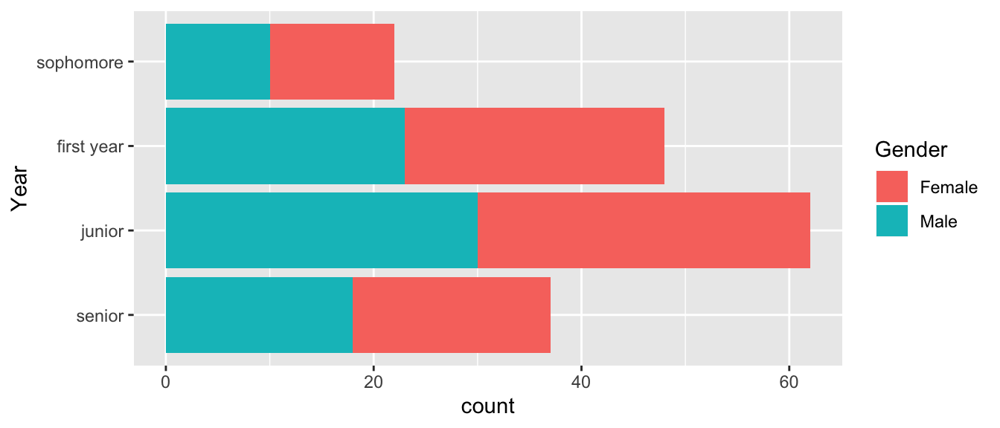
# Reverse order of what I already had
Students %>%
mutate( Year = fct_relevel(Year, 'senior', 'junior','sophmore','first year') ) %>%
mutate( Year = fct_rev(Year) ) %>%
ggplot( aes(x=Year, fill=Gender)) + geom_bar() + coord_flip()## Warning: Unknown levels in `f`: sophmore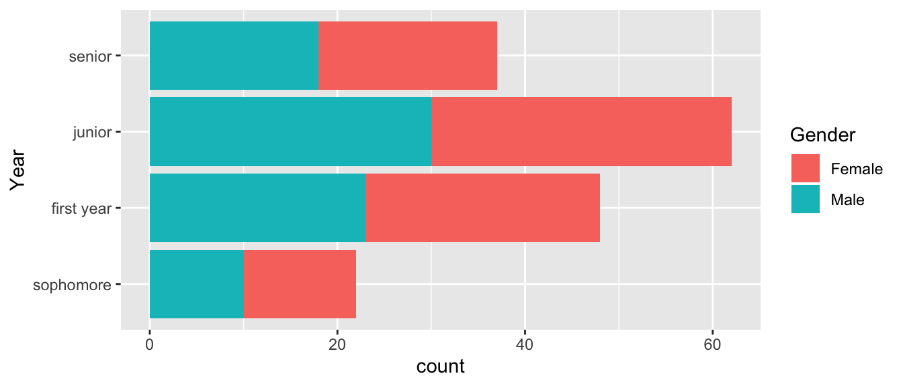
# Sometimes it is useful to rotate using + or - the number of shift steps
# positive values move the first to the end. Negative values move the end to the front.
Students %>%
mutate( Year = fct_relevel(Year, 'senior', 'junior','sophmore','first year') ) %>%
mutate( Year = fct_shift(Year, +1) ) %>%
ggplot( aes(x=Year, fill=Gender)) + geom_bar() + coord_flip()## Warning: Unknown levels in `f`: sophmore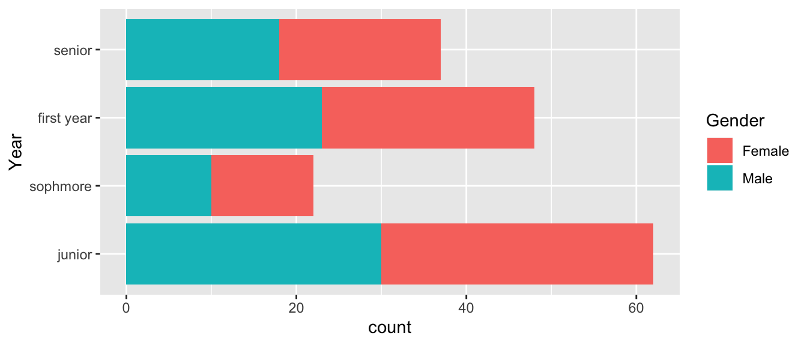
# In the order of the most number of records
Students %>%
mutate( Year = fct_infreq(Year) ) %>%
ggplot( aes(x=Year, fill=Gender)) + geom_bar() + coord_flip()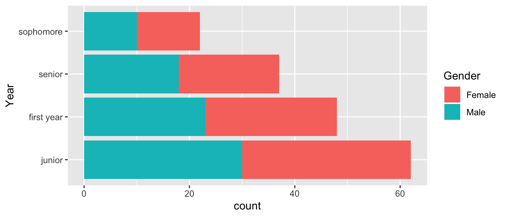
For a second example data set, consider a poll from Monmouth University of New Hampshire Democrats and Independents.
Dems <- tribble(
~Candidate, ~Percent, ~AgeOnElection,
'Elizabeth Warren', 27, 71,
'Joe Biden', 25, 77,
'Bernie Sanders', 12, 79,
'Pete Buttigieg', 10, 38,
'Kamala Harris', 3, 56,
'Cory Booker', 2, 51,
'Tulsi Gabbard', 2, 39,
'Amy Klobuchar', 2, 60,
'Tom Steyer', 2, 63,
'Andrew Yang', 2, 45,
'Other', 3, NA,
'No one', 1, NA,
'Undecided', 9, NA)We now want to first arrange the 2020 Democratic candidates for US president by their support.
# Reorder Candidates based on the polling percent. The order of Smallest to largest
# results in 'No one' at the bottom and Elizabeth Warren at the top.
Dems %>%
mutate( Candidate = fct_reorder(Candidate, Percent) ) %>%
ggplot( aes(x=Candidate, y=Percent)) + geom_col() + coord_flip()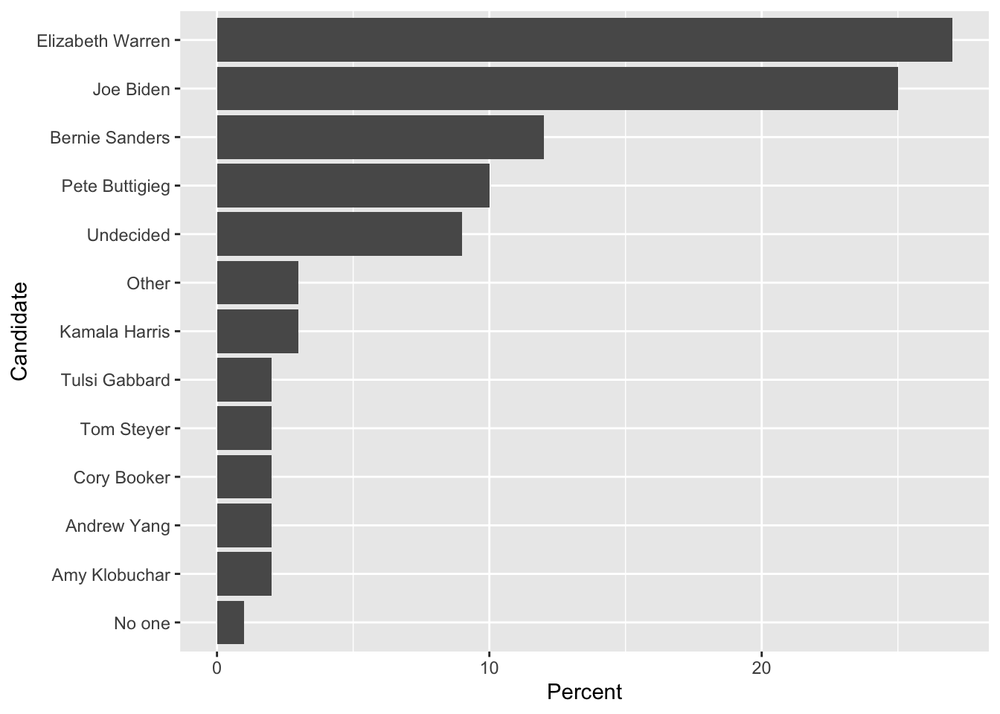
We might consider moving the Other and Undecided categories as the first categories before “No one”.
Dems %>%
mutate( Candidate = fct_reorder(Candidate, Percent) ) %>%
mutate( Candidate = fct_relevel(Candidate, 'Other', after=0) ) %>%
mutate( Candidate = fct_relevel(Candidate, 'Undecided', after=0) ) %>%
ggplot( aes(x=Candidate, y=Percent)) + geom_col() + coord_flip()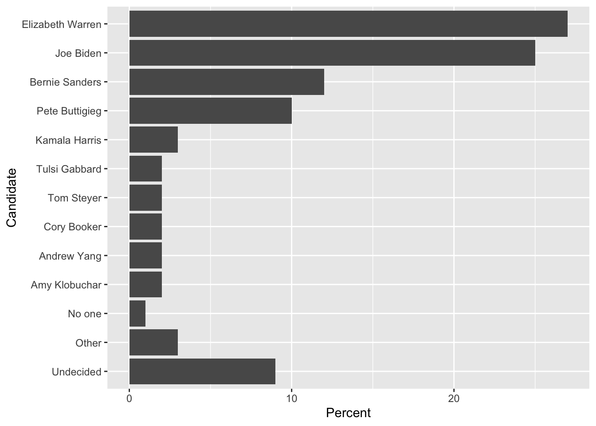
7.4 Add or substract Levels
Often we find that it is necessary to collapse several categories into one. In the Democratic candidate example, we might want to collapse No one, Other and Undecided into a single Other category.
# This collapses the factor levels but I still have 3 rows of "other"
Dems %>%
mutate( Candidate = fct_collapse(Candidate, other = c('No one', 'Other', 'Undecided')) )## # A tibble: 13 x 3
## Candidate Percent AgeOnElection
## <fct> <dbl> <dbl>
## 1 Elizabeth Warren 27 71
## 2 Joe Biden 25 77
## 3 Bernie Sanders 12 79
## 4 Pete Buttigieg 10 38
## 5 Kamala Harris 3 56
## 6 Cory Booker 2 51
## 7 Tulsi Gabbard 2 39
## 8 Amy Klobuchar 2 60
## 9 Tom Steyer 2 63
## 10 Andrew Yang 2 45
## 11 other 3 NA
## 12 other 1 NA
## 13 other 9 NA# Collopse the factor, then summarize by adding up the percentages
Dems %>%
mutate( Candidate = fct_collapse(Candidate, other = c('No one', 'Other', 'Undecided')) ) %>%
group_by(Candidate) %>% summarize(Percent = sum(Percent)) %>%
mutate( Candidate = fct_reorder(Candidate, Percent) ) %>%
mutate( Candidate = fct_relevel(Candidate, 'other', after=0) ) %>%
ggplot( aes(x=Candidate, y=Percent)) + geom_col() + coord_flip()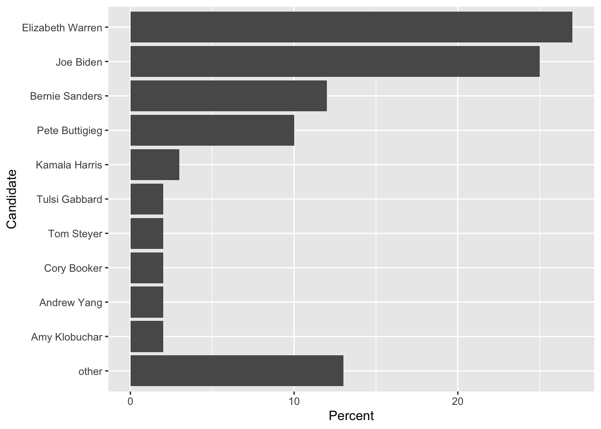
I need to add the case where we are updating a column of factors and I want to replace a single observations level with another. To do this we do something like this:
data <- data.frame( Name=c('Alice','Bruce','Charlie'), Grade = c('A','B','B') ) %>%
mutate( Grade = factor(Grade) ) %>%
mutate( Grade = fct_expand(Grade, 'C')) %>%
mutate( Grade = if_else(Name == 'Charlie', factor('C', levels=levels(Grade)), Grade ) )
data ## Name Grade
## 1 Alice A
## 2 Bruce B
## 3 Charlie CThe key idea is that both the TRUE and the FALSE outputs have to have the same type (which is a factor), and both factors have to have a compatible set of levels.
7.5 Exercises
In the package
Lock5Datathere is a datasetFloridaLakeswhich contains water sample measurements from 53 lakes in Florida, produce a bar graph shows theLakeandAvgMercuryvariables and make sure that the lakes are ordered by Average Mercury content.In the package
Lock5Data, there is a datasetFootballBrainthat has brain measurements for 75 individuals. TheGroupvariable has three levels:Controlis somebody that did not play football,FBNoConcussis a football player with no history of concussions, orFBConcusswhich is a football player with concussion history. The variableCognitonmeasures their testing composite reaction time score. Make a box-plot graph of the groups vs cognition, but change theGrouplabels to something that would make sense to a reader. Because there is no data for theControlgroup, don’t show it on your resulting graph. Also notice that the original data set column name misspells “cognition”.In the package
Lock5Data, there is a datasetRestaurantTipswhich gives tip data from the restaurant First Crush Bistro in Potsdam, NY. Graph theBillversus thePctTipfor eachDayof the week where we useDayas the variable to facet_grid or facet_wrap on. Make sure theDayvariable has conventional days. Also include information about if the bill was paid via credit card and also make sure the credit card labels are eitherCredit CardorCash.